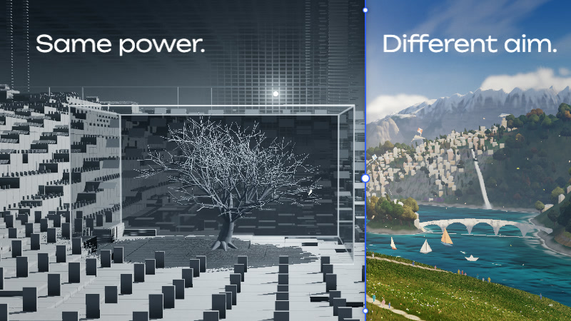

技术研究
做东西之外，
也想弄明白为什么。
这里有产品体验、游戏和设计研究，也有足球、文化与生活里的兴趣。可以按主题慢慢看。

技术研究 · 张谦 × Codex
当演示开始改写自己。
一段提示词生成的互动演示，为什么让人印象深刻？我们从画面聊到设计，再测一测电脑为它付出了多少计算成本。
阅读案例研究START HERE
先挑一个你感兴趣的主题。
SPECIAL COLLECTIONS
另外两个独立栏目。
ARTICLES
也可以直接找一篇。
生活随笔
AI医疗番外篇 · 命运的推拿术
产品体验
解锁未来科技！Meta Ray-Ban智能眼镜日用体验
产品体验
ROKID GLASSES充电眼镜盒一手详细体验分享
产品体验
我用270+问题解剖国产AI眼镜ROKID GLASSES
VR 与体验研究
VR论文导读：8万字研究全公开
VR 与体验研究
[15/15] VR体验影响因素：总结与展望
VR 与体验研究
[14/15] 个体因素（四）：3D经验/时长/适应
VR 与体验研究
[13/15] 个体因素（三）：平衡/健康/接受度
VR 与体验研究
[12/15] 个体因素（二）：疲劳/频率/主视眼
VR 与体验研究
[11/15] 个体因素（一）：经验/心理/性别年龄
VR 与体验研究
[10/15] 运动与参照系因素
VR 与体验研究
[09/15] 内容设计因素（三）
VR 与体验研究
[08/15] 内容设计因素（二）
VR 与体验研究
[07/15] 内容设计因素（一）
VR 与体验研究
[06/15] 多感官协调与环境因素
VR 与体验研究
[05/15] 瞳距、亮度、重量与佩戴舒适度
VR 与体验研究
[04/15] 体感反馈、焦距与畸变校正
VR 与体验研究
[03/15] 视场角、分辨率与像素密度对沉浸感的影响
VR 与体验研究
[02/15] 硬件技术参数对晕动症的影响机制
VR 与体验研究
[01/15] VR用户体验与晕动症：构成因素深度解析
VR 与体验研究
元宇宙运动指南，今天你VR运动了吗？
VR 与体验研究
VR 乒乓球调研报告
VR 与体验研究
VR 一体机硬件报告
游戏与设计
心跳回忆 Review
游戏与设计
DQ7 Reimagined Review
游戏与设计
魔兽世界：二十年传奇
游戏与设计
格兰蒂亚2：DC末代RPG神作
游戏与设计
金庸群侠传：国产武侠RPG开山鼻祖
游戏与设计
杀戮尖塔深度分析
游戏与设计
Game Genre 游戏类型全图鉴
生活随笔
能救你命的大保养：胃肠镜全流程攻略
游戏与设计
游戏设计文档 (GDD)：游戏的蓝图
游戏与设计
设计美学风格的形成原理
产品体验
World-class Simulator？通往驾驶元宇宙之路
产品体验
Gravity Jet Suit：人类飞行梦想
足球人物与知识
罗纳尔迪尼奥 · 足球精灵
足球人物与知识
罗纳尔多 · 外星人
足球人物与知识
巴蒂斯图塔 · 战神
足球人物与知识
马拉多纳 · 球王
足球人物与知识
贝克汉姆 · 圆月弯刀
足球人物与知识
卡西利亚斯 · 圣伊戈尔
足球人物与知识
哈兰德 · 魔人布欧
足球人物与知识
欧洲五大联赛完全指南
足球人物与知识
2026 世界杯赛程预测
文化与武术
《茅屋为秋风所破歌》句读解读
文化与武术
Wushu Fundamentals 武术基本功
文化与武术
三皇炮捶拳深度调研
文化与武术
中华武术文化深度分析
文化与武术
少林寺专题报告
文化与武术
武当山专题报告
文化与武术
峨眉山专题报告
文化与武术
华山专题报告
文化与武术
泰山专题报告
文化与武术
黄山专题报告
文化与武术
南拳北腿专题报告
文化与武术
中华剑法专题报告
文化与武术
中华刀法专题报告
文化与武术
中华枪法专题报告
文化与武术
中华棍法专题报告
游戏与设计
设计美学史：从手工艺到人工智能
没有找到相关文章。试试其他关键词。